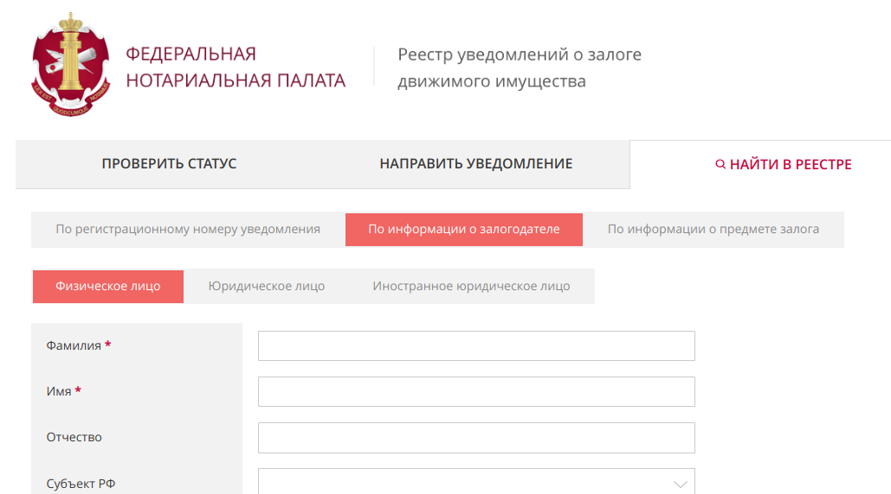

Создание QIWI кошельков со статусом "Основной"
Всем привет,толчком на написание этой статьи является мое невезение в продажах QIWI-кошельков,и к тому же, что я хочу что-то сделать для вас всех! Я уже готов к оскорблениям,проклятиям и прочим унижениям со стор оны владельцев крупных магазинов по продаже QIWI-кош ельков, но для Вас я готов на это! (с) Falps
Давайте не будем обсуждать,то насколько данные действ ия хороши со стороны моральной этики,но одно я знаю точно, что все это показано,только в ознакомительных целях,и ни в коме случае не призывает вас делать,то что указанно в дан ной статье,ну и так же я хочу показать как Россия относит ся к персональным данным своих граждан.
Приступим к получению qiwi-кошелька со статусом "Основной"
1.1 Открываем мой любимый сайт реестра залогов https://www.reestr-zalogov.ru/search/index
1.2 Нажимаем на кнопку "Найти в реестре", затем кнопку "По инфор мации о залогодатели", после "Физическое лицо"
1.3 Теперь вводим рандомные Имя и Фамилию,и нажимаем кнопку "Найти"
